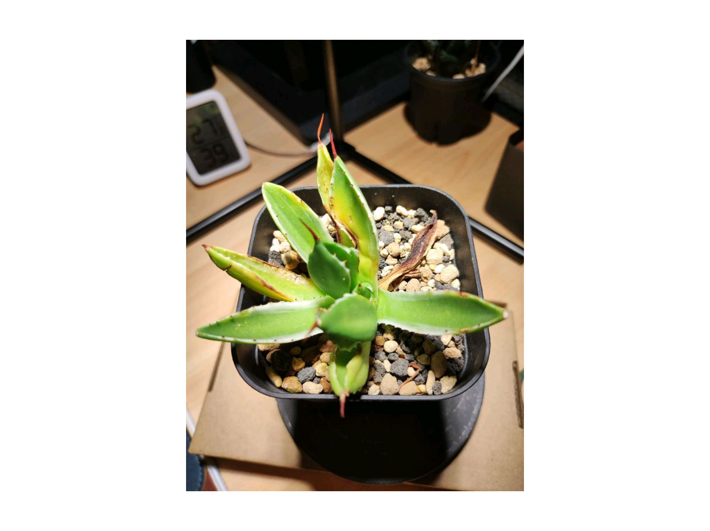
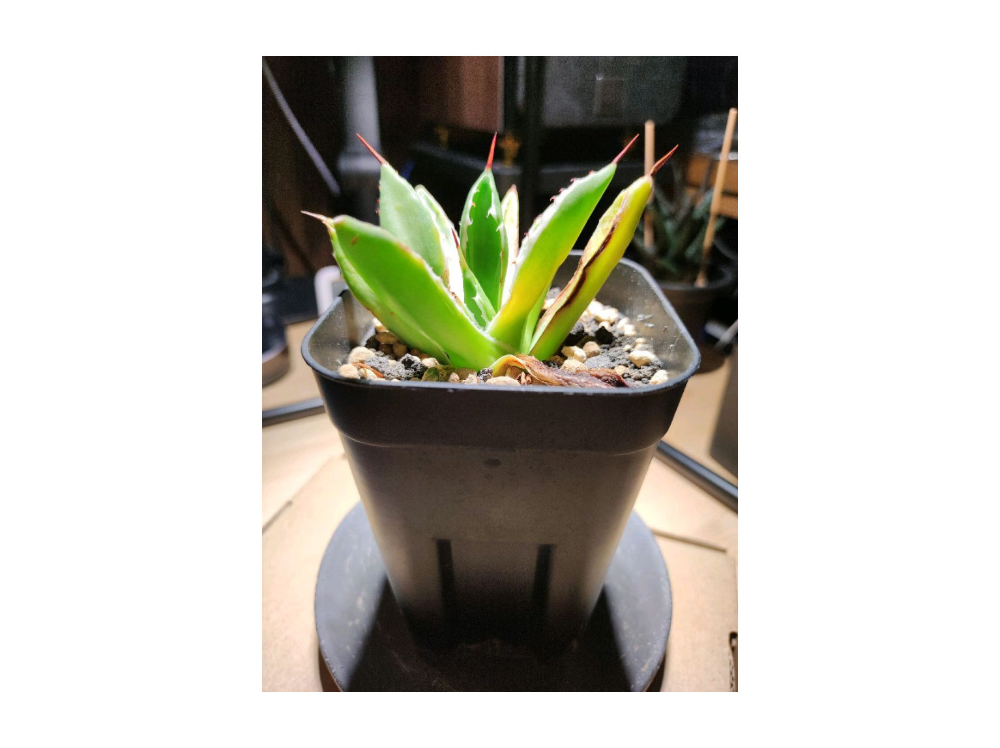

| 日時 | 鉢込み重量(g) | 前回比(g) | 所感 |
|---|---|---|---|
| 2026-05-31 16:00 | 344.6 | -29.4 | 給水後18hで-29.4g、本格LED運用初日のためペース速め |
| 2026-05-30 22:00 給水後 | 374.0 | +45.4 | 2回目満水到達 |
| 2026-05-30 22:00 給水前 | 328.6 | -0.1 | 2回目給水直前 |
| 2026-05-30 12:27 | 328.7 | -12.0 | 給水適期に到達 |
| 2026-05-29 11:53 | 340.7 | -14.7 | 24.5hで-14.7g、葉の張り改善 |
| 2026-05-28 11:20 | 355.4 | -19.9 | 14hで-19.9g、根機能良好の兆候 |
| 2026-05-27 22:00 給水後 | 375.3 | +46.7 | 初回満水基準確定 |
| 2026-05-27 22:00 給水前 | 328.6 | -5.1 | 乾燥重量ベンチマーク取得 |
| 2026-05-27 10:26 | 333.7 | — | 外側3枚黄変・張りなし、初回計測 |
| 日時 | 室温(℃) | 湿度(%) | 照度(lux) | CO₂(ppm) | 所感 |
|---|---|---|---|---|---|
| 2026-05-31 16:00 | 27.9 | 39 ⚠️ | — | — | LED40cm接近の影響か、湿度が理想下限を下回る |
| 2026-05-30 23:00 | 25.6 | 45 | — | — | 給水と夜間気温低下で湿度回復 |
| 2026-05-30 12:27 | 26.8 | 24 ⚠️ | — | — | エアコン停止＋窓開け、外気湿度低下が要因 |
| 2026-05-29 11:53 | 26.2 | 49 | — | — | 理想レンジ内、安定 |
| 2026-05-27 10:26 | 28.1 | 44 | — | — | 初回計測時の環境 |
| 日時 | 給水前(g) | 給水後(g) | 給水量(g) | 方法 | 補足 |
|---|---|---|---|---|---|
| 2026-05-30 22:00 | 328.6 | 374.0 | 約45 | アイロン用先細給水カップ | 2回目給水、LED消灯後21:30〜22:00に実施 |
| 2026-05-27 22:00 | 328.6 | 375.3 | 約47 | アイロン用先細給水カップ | 初回給水、満水重量を確定 |
| 日時 | 葉状態 | 新葉 | 変色 | 害虫・カビ | 写真 | 所感 |
|---|---|---|---|---|---|---|
| 2026-05-31 16:00 | 張り良好 | 4-5枚展開 | 外葉枯れ込み継続(自然調整) | なし |
  |
中央新葉4-5枚充実、覆輪斑明瞭、葉先赤褐色発色良好。鋸歯しっかり育成。外葉枯れ込みは輸送ダメージの延長で自然な調整中 |
| 2026-05-30 12:27 | 変化なし | 安定 | なし | なし | 📷 | 湿度低下が懸念点だが株状態は良好 |
| 2026-05-29 11:53 | 張り良好 | あり | 良好 | なし | 📷 | 赤褐色発色鮮やか、優良株として再評価 |
| 2026-05-29 | 張り改善 | あり | 薄茶斑・覆輪斑茶線 | なし | 📷 | 外側黄変停止。写真4枚撮影 |
| 2026-05-28 | 外葉黄変 | あり | 黄変あり | なし | 📷 | 中央新葉健全、右上葉大黄変・葉先枯死。輸送ダメージ |
| 日時 | 種別 | 詳細 |
|---|---|---|
| 2026-05-30 22:00 | 2回目給水 | 給水前328.6g→給水後374.0g、給水量約45g |
| 2026-05-30 09:00 | LED運用拡張 | 距離45cm→40cm、照射時間10h→12h(9:00-21:00)に延長 |
| 2026-05-28 | 設備到着 | KN-618サーキュレーター、SwitchBot機器、Akondスタンド設置完了 |
| 2026-05-27 22:00 | 初回給水 | 給水前328.6g→給水後375.3g、アイロン用先細給水カップで土に直接 |
| 2026-05-27 09:00 | LED切替 | NEO TSUKUYOMI 20Wへ変更、距離45cm、9:00-19:00(10h) |
| 2026-05-25 09:00 | LED初期照射 | BRIM SOL 24W、9:00-18:00(9h)運用開始 |
| 2026-05-23 | 株購入 | ロイヤル長久手にてキュービック錦購入、プレステラ深型90鉢植え済み |
| 日時 | 内容 | 根拠 | 次回確認日 |
|---|---|---|---|
| 2026-05-30 | 5年育成ロードマップ策定 | 養生→2027春鉢増し→2028→2029→2030大株化 | 2027-01-01 |
| 2026-05-30 | 台湾製八角鉢は2028春以降に保留 | 現状は過大、株径13cm頃に再検討 | 2028 Spring |
| 2026-05-30 | 来春の植え替えは「根っこつよし3号」採用 | 現株サイズに対し1.2-1.5倍ルール適合 | 2027 Spring |
| 2026-05-30 | 土交換は来春まで見送り | 7日目で植え替えはリスク大、根の張りを優先 | 2027 Spring |
| 2026-05-30 | LED運用 10h→12hへ延長、距離も45→40cmに短縮 | 24hで-14.7gの蒸散、葉の張り・色・新葉動きが良好 | 2026-06-06 |
| 2026-05-28 | 「輸送ダメージを抱えた優良株候補」と評価 | 中央新葉健全、外葉のみ黄変 | — |